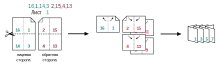

Расчёт страниц
Вычисляет порядок страниц для печати на типографском листе. Инструкция:

Конфигурация
Страниц на листе:
2 на листе А4 (формат А5)
4 на листе А4 (формат А6)
8 на листе А4 (формат А7)
Начинать со страницы:
До:
Пустая:
Страниц в тетради:
Параметры отображения:
Показывать лицевую сторону
Показывать обратную сторону
Обратить порядок листов
Переставить аверс/реверс
(кривизна)
Страницы (
копировать
):
1
[
...
|
...
|
...
]